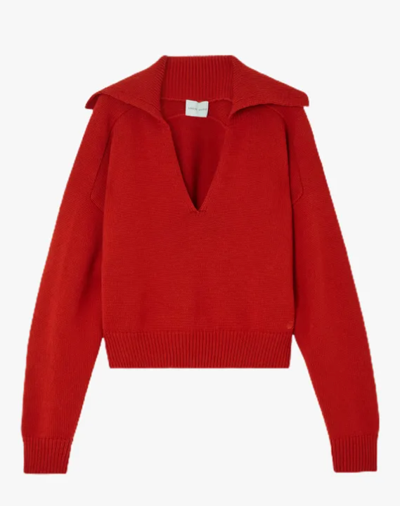
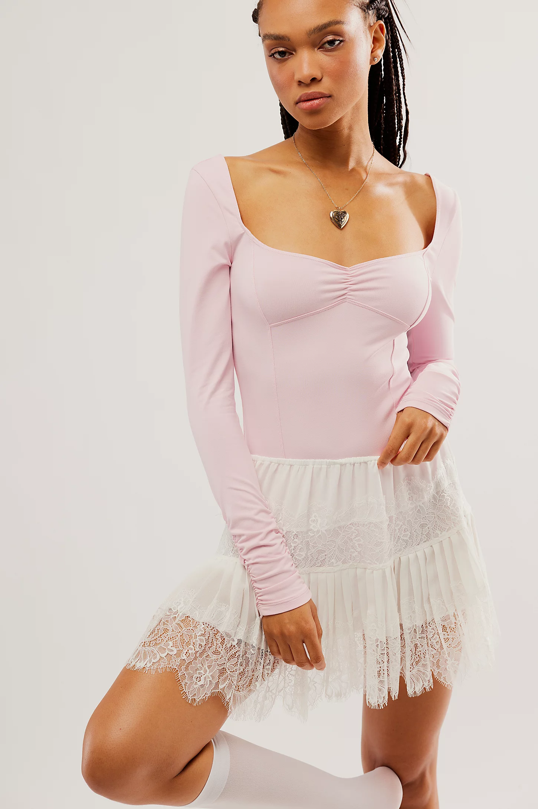
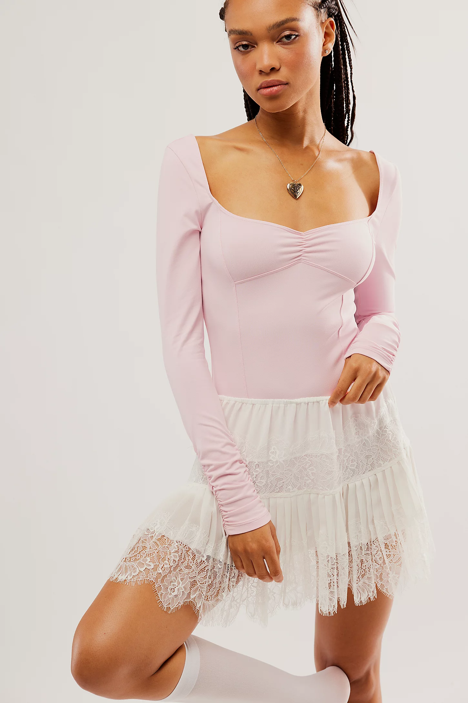

2023 has been filled with unique fashion styles.
Maroon and deep red colors are the new "it" color for fall. Along with browns, and navy, maroon is a beautiful color that can be used as a statement piece or small pop of color. Maroon manicures, shoes, bags, and coats have been super trendy and cute.
The trendy new girly style is tying bows on everything. From using ribbon to tie shoes, bows in hair, and printed bows on tops, it is apparent that pink bows are the girly new style
Ballet fashion that was once only worn to dance in, has transpired to everyday outfits. Ballet flats, leotards, and leg warmers are the new in style and can be dressed up or down. Super cute and girly, this new ballet fashion trend follows in the footsteps of the bows.


 
